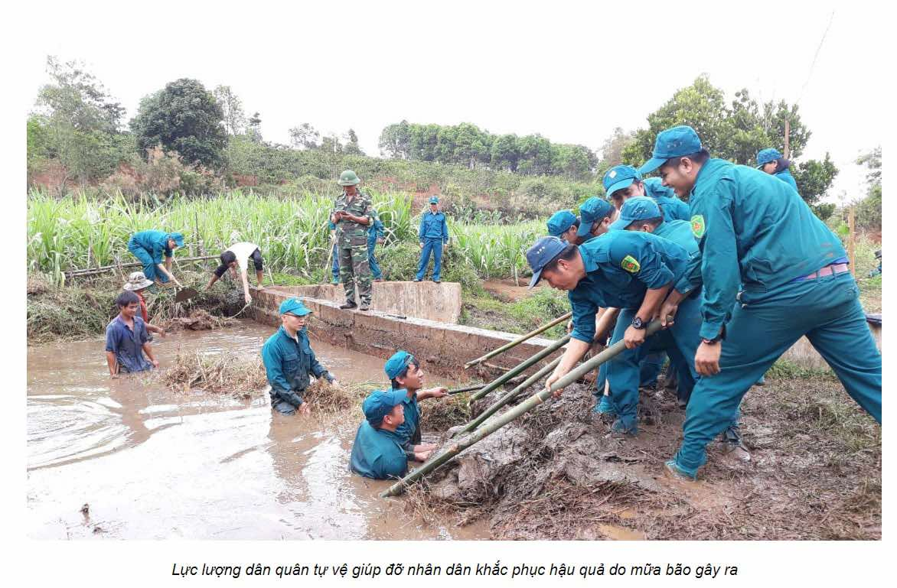
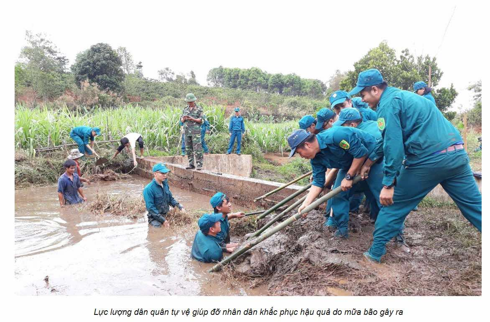

KỆ TRƯNG BÀY HÌNH ẢNH TRUYỀN THỐNG VÀ NGHỆ THUẬT QUÂN SỰ XƯA

NHỮNG TRUYỀN THỐNG TỐT ĐẸP VẪN ĐƯỢC PHÁT HUY CHO TỚI NGÀY NAY


 


CON NGƯỜI CỦA THỜI ĐẠI LAO ĐỘNG HĂNG SAY, CỐNG HIẾN, XÂY DỰNG TỔ QUỐC, MÃI KHẮC GHI NHỮNG CÔNG LAO TO LỚN CỦA THẾ HỆ CHA ÔNG

CÁC GIÁ TRỊ LỊCH SỬ VẪN ĐƯỢC BẢO TỒN CHO TỚI NGÀY NAY